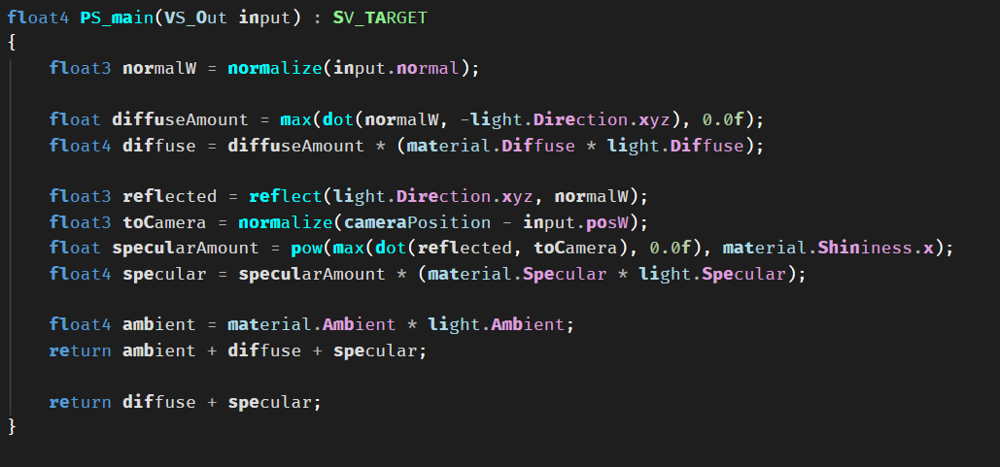
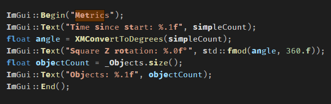

Per-pixel Phong lighting:

Graphics programming student, C++ / DirectX 11 / C#. Seeking a 2027-28 placement.
The project uses DirectX 11 to create 3D objects in a scene. This can be used as a foundational tool to apply maths, physics or a game on top of it.
Currently it follows the 3D rendering pipeline and HLSL to utilise Phong Lighting techniques and it renders multiples objects using matricies

Problem: I wanted my code ready to generate procedural objects on command. The first step was making my object creation method dynamic. I didn't know what I needed so the first was researching collection types, their pros and cons and contrasting to my context.

IMGUI implementation:
Note because of the vector we can .size to get the quantity of objects in scene.

This project uses Monogame & server management applied for a mutliplayer game.
Currently it's a crude WIP but the proof of concept is valid.